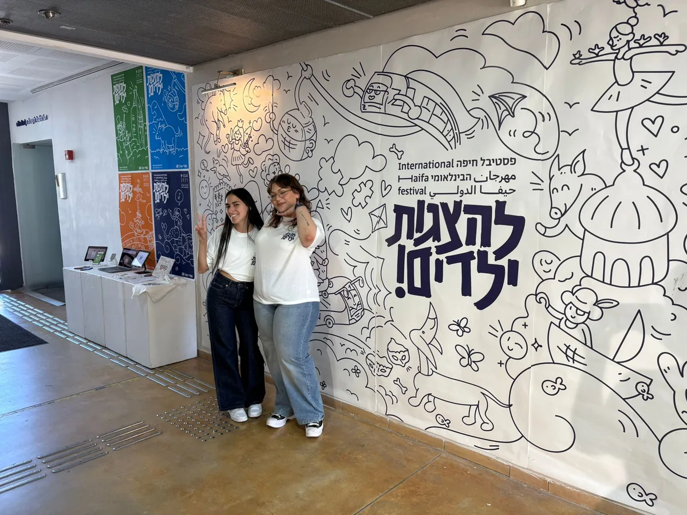
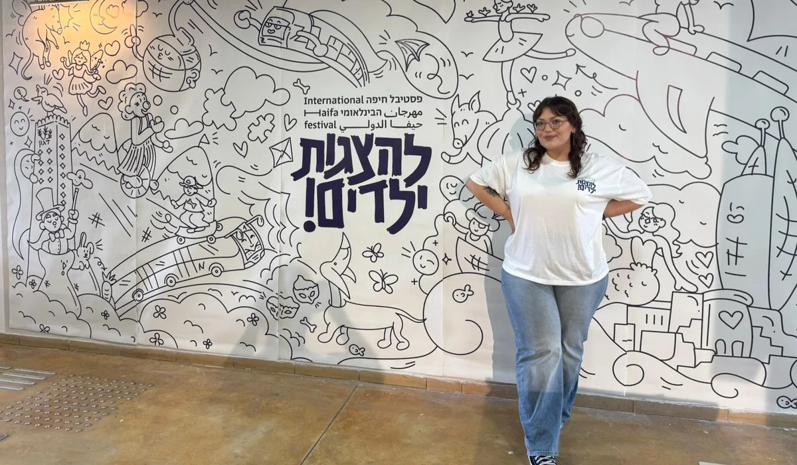
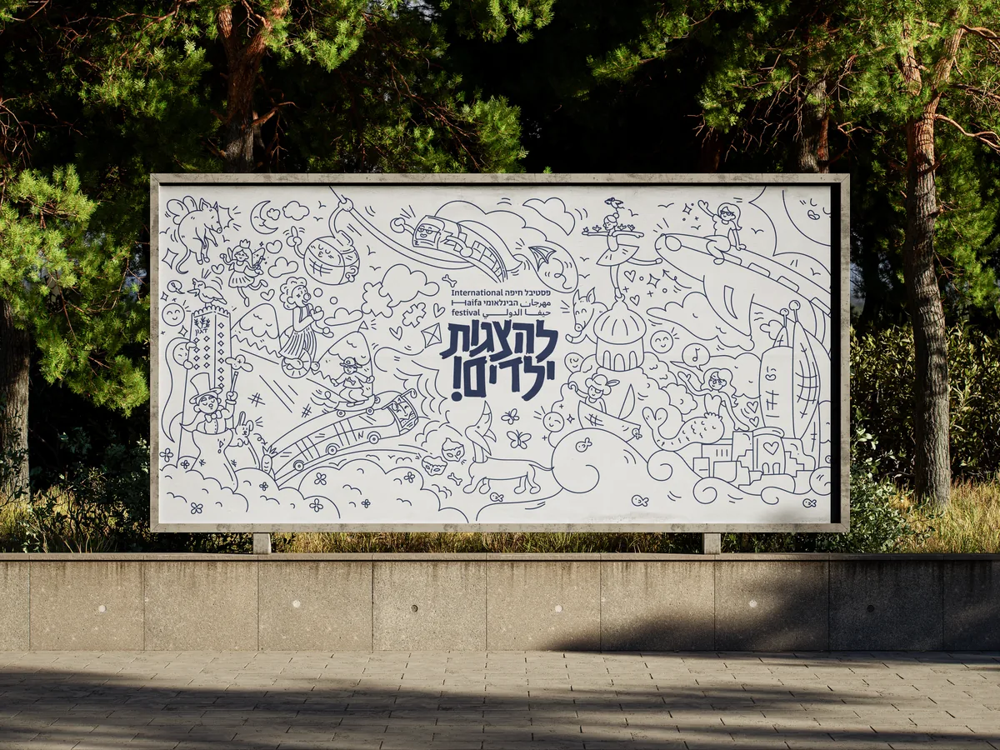
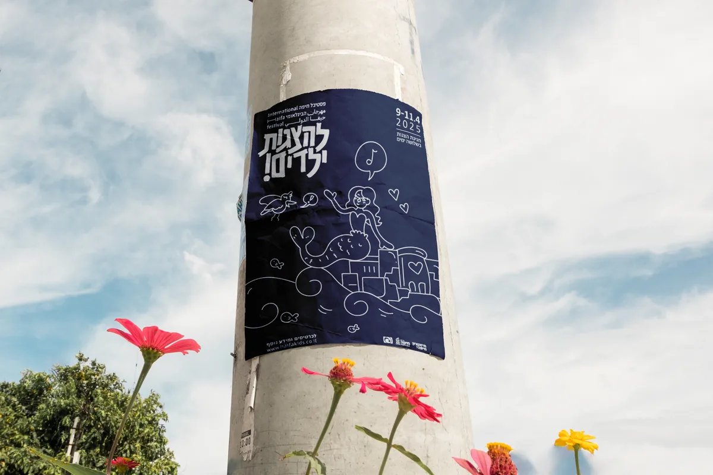
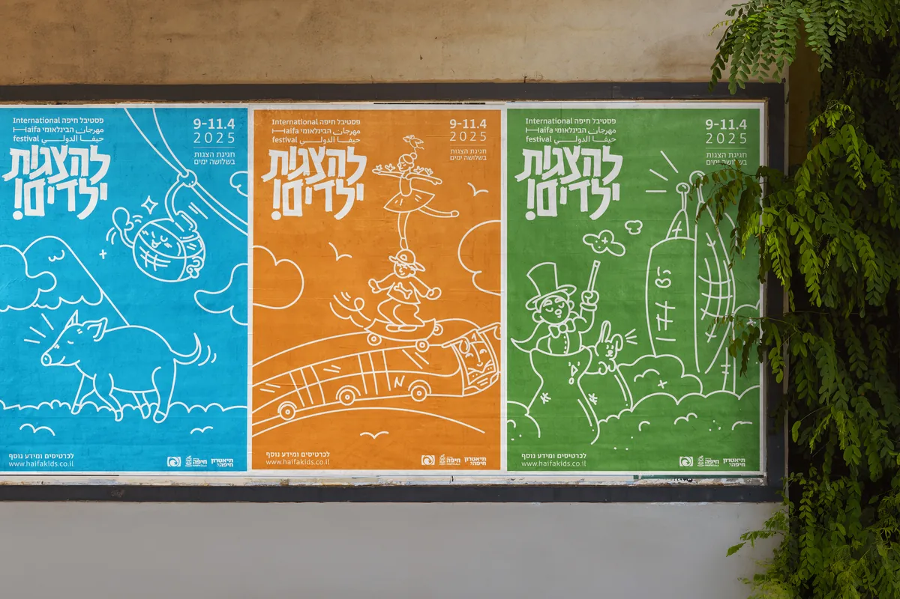

פסטיבל חיפה הבינלאומי להצגות ילדים
מיתוג מחדש: חיפה כעיר של דמיון
הבריף
בקורס התבקשנו לפתח זהות חזותית לאירוע תרבות קצר מועד בעיר חיפה. בחרנו בפסטיבל חיפה הבינלאומי להצגות ילדים, שמפיק תיאטרון חיפה. הפסטיבל ממשיך מסורת של עשרות שנים, מושך מדי שנה עשרות אלפי מבקרים מכל הארץ, ופונה לילדים ולמשפחות מכל הגילאים. המטרה הייתה ליצור שפה ויזואלית ייחודית ואפקטיבית, וליישם אותה על כל צרכי התקשורת של אירוע אמיתי, בדפוס ובדיגיטל.
הרעיון
איך ילדים רואים את חיפה? בנינו את המיתוג סביב חיפה כעיר של דמיון: רכבלית חצופה, בת ים שמזמרת בבת גלים, כרמלית בתפקיד גיבורת-על, חזיר מעופף, וקוסם ושפן שמתחבאים בין בתי הזיקוק. לצד שפת איור קווית ושמחה, פיתחנו מערכת טיפוגרפית תלת-לשונית בעברית, ערבית ואנגלית, שמחזיקה את כל המערכת יחד.
תוצרים
- לוגו ומערכת טיפוגרפית תלת-לשונית
- סדרת כרזות
- כרזה מונפשת לאינסטגרם
- תוכנייה מודפסת
- מפת הפסטיבל
- אתר אינטרנט
- הזמנה רשמית
- מודעת עיתון
- שילוט חוצות
- קו מוצרים
- הצבה בתערוכת ההגשה

הלוגוטייפ שלנו נשען על הלטרינג הראשון שמצאנו במהלך המחקר שלנו, הלטרינג נעשה בפסטיבל משנת 1987:



